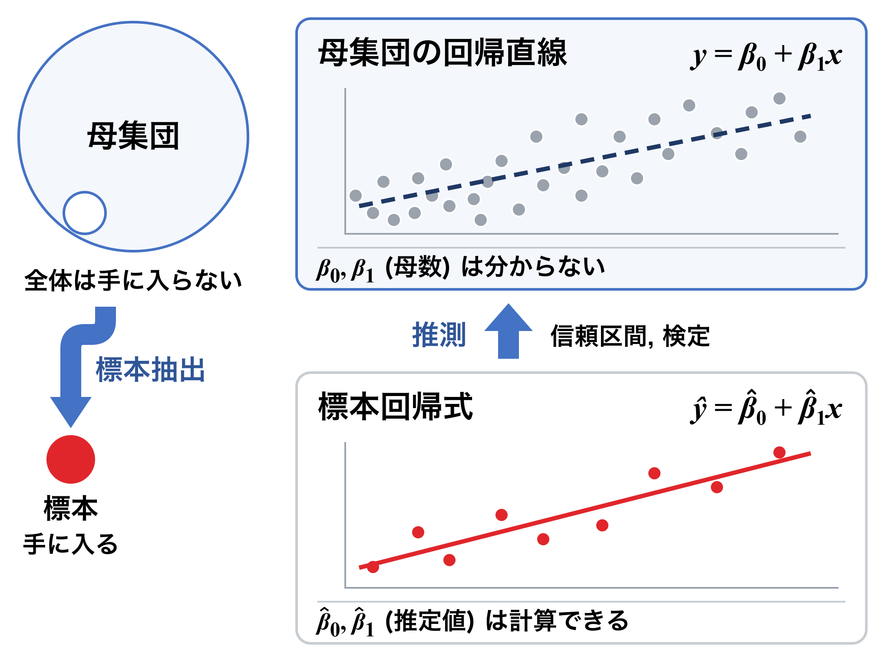
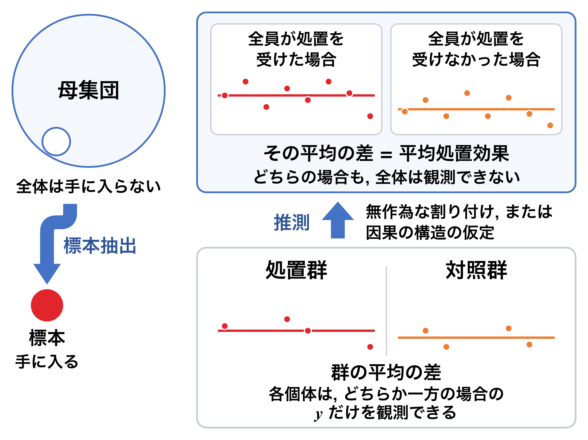

回帰分析の目的
回帰式と回帰係数で名前を確かめた回帰式は, どのような問いに答えるために使うのでしょうか. Gelman et al. (2020, Section 1.2) は, 回帰の主な用途として次の 4 つを挙げています.
- 予測: 既にある観測を式で表し, 新しいデータの値を当てること. 例として, 選挙の得票率や病気の診断が挙げられています.
- 関連を調べること: ある変数や変数の組から, 目的変数をどれだけ予測できるかを要約すること. 例として, 病気の危険因子を特定することが挙げられています.
- 外挿: 標本と関心のある母集団との既知の違いを調整して, 母集団について述べること. 例として, 回答者が母集団を代表していない世論調査の調整が挙げられています.
- 因果推論: 処置を受けた場合と受けなかった場合の結果を比べ, 処置の効果を推定すること.
本稿では, 回帰分析の結果が誰について何を述べるかで, 目的を関係の定量化と母集団への推測, 予測, 因果推論の 3 つに分けます. この分け方は, 上の 4 つの用途をもとに本稿で組んだものです. 関連を調べる用途に, 標本から母集団について述べる推測を合わせたものを, 関係の定量化と母集団への推測と呼びます. 外挿は, どの目的でも結果を別の集団へ広げるときに要る手順として, 目的ごとの説明の後で扱います.
3 つの目的の違いを, 一組の記録で確かめます. ある大学の学生について, GPA, 週あたりの勉強時間とアルバイト時間, 奨学生かどうかを記録したとします. この例では, 推測や予測の対象とする学生の集団が母集団です. これは架空の例で, 実際の分析には合成 GPA の学習用データを使います. この記録から, 目的ごとに異なる問いを立てられます. 次の表では, 問いを目的ごとに並べ, それぞれの前提と確かめ方を比べます.
| 問い | 誰について何を述べるか | 何を前提にするか | 何で確かめるか |
|---|---|---|---|
| (a) 関係の定量化と母集団への推測. 他の条件が同じで, 勉強時間だけ週 1 時間違う学生を比べると, 平均 GPA はどれだけ違うか | 標本を取った母集団での, 条件をそろえた平均の差 | 母集団からの抽出に偏りがなく, 比べる条件を先に決めていること. 比較する条件の範囲で, 回帰式が平均の差を表せること | 係数と信頼区間を示し, 必要なら検定する. 同じ母集団の別の標本でも差を調べる |
| (b) 予測. 次に入学する学生の GPA をどれだけ正確に当てられるか | 同じ母集団の新しい学生 1 人ずつの GPA と, 予測の誤差 | 新しい学生が標本と同じ分布から来て, 予測に使う変数を予測時に得られること | 回帰式を決めるときに使わなかったデータで, 予測値と実際の値の差を測る |
| (c) 因果推論. 勉強時間を増やす介入を行うと, 平均 GPA はどう変わるか | 同じ母集団で, 介入する場合としない場合の平均 GPA の差 | 介入内容を定め, 観測した結果と介入した場合の結果を結び付ける因果の構造を仮定すること. 無作為な割り付けで比較できる場合もある | 観測データから目的の差を求められる条件を調べ, 仮定を変えた場合や, 別の設計で得た結果を検討する |
目的によって, 何を前提にし, どの変数を回帰式に入れ, 結果をどう確かめるかが変わります. Shmueli (2010) は, 理論から導いた因果の仮説を統計モデルで検証することを「説明」, 新しい観測の値を当てることを「予測」と呼んで区別し, 研究の設計とデータの収集, 変数の選び方, 手法の選び方, モデルの評価と検証など, モデルを作るどの段階でも, 2 つの目的で扱いが変わることを示しています. 同じ論文は, 回帰式を因果推論や予測のためでなく, 変数どうしの関連を捉えるために当てはめる場合を「記述」と呼んでいます. 表の (a) で求めるのは, 観測した条件をそろえた学生どうしの平均の差で, この「記述」にあたります. 例えば, 奨学生区分とアルバイト時間を式に入れると, 両方の条件が同じ学生どうしで, 勉強時間が異なるときの平均 GPA の差を求められます. 標本から母集団での平均の差を推定するときは, 標本の選び方が根拠になります.
母集団の回帰式の係数 \beta_0, \beta_1 のように, 母集団を特徴付ける値を母数と呼びます. 標本から求めた回帰式は, 母集団の回帰式と区別して \hat y = \hat\beta_0 + \hat\beta_1 x と書き, その係数 \hat\beta_0, \hat\beta_1 を母数の推定値と呼びます. 次の図は, この目的での母集団と標本の関係を, 説明のために描いた模式図です. 点は実データではありません. 母集団全体は手に入らないので, 母数は分かりません. 手に入る標本からは推定値を計算でき, 信頼区間や検定を使って, 推定値から母数について述べます. この手順が, 関係の定量化と母集団への推測の「推測」にあたります.

頻度論とベイズ統計学
表の (a) のように母集団について述べるとき, この分野では頻度論の枠組みを使います. 頻度論では母数を固定した値とみなし, 同じ手順で標本を取り直したときのばらつき (標本ごとに回帰直線が異なる図で見たもの) から, 信頼区間と検定を作ります.
ベイズ統計学では, 母数の不確かさを確率分布で表します. データを観測する前の不確かさを表す事前分布と, データの出方を表すモデルを組み合わせ, 観測後の事後分布を求めます. 事後分布は, 例えば GPA の傾きがどの範囲にあるかを述べるのに使えます.
2 つの枠組みの違いは, 不確かさをどう表すかにあります. どちらの枠組みでも, 関係の定量化, 予測, 因果推論の問いを扱えます. ベイズの考え方と実例は統計モデリングとベイズ統計学の基礎にあります.
新しく入学した学生の GPA を予測するときは, 例えば同じ勉強時間の学生の平均 GPA を予測値として使えます. 予測の誤差には, 手元の標本から平均を推定するときの誤差と, 勉強時間が同じでも残る個人差が含まれます. 新しい学生の成績が予測値からどれだけ外れるかは, 回帰式を決めるときに使わなかったデータで測ります.
次の図は, 予測での母集団と標本の関係を, 推測の図と同じ形で描いた模式図です. 点は実データではありません. 母集団から, 回帰式を求める標本とは別に, 回帰式を決めるときに使わないデータ (図の未使用のデータ) を取り分けます. 新しい個体 (新しく入学した学生) については, 説明変数の値 x_0 は分かっていても, 目的変数の値 Y_0 はまだ分かりません. 標本から求めた回帰式による x_0 での予測値を \hat y(x_0) と書くと, 知りたいのは Y_0 と, \hat y(x_0) が Y_0 からどれだけ外れるかです.

誤差を測る手順と, 平均についての区間と個人についての予測区間の読み方は予測にあります.
勉強時間を増やす取り組みの効果を知りたい場合は, 同じ学生集団が取り組みを受けた場合と受けなかった場合の平均 GPA を比べます. 観測データで勉強時間の異なる学生を比べると, 勉強時間以外の条件も異なることがあります. 観測データから介入した場合としなかった場合の平均の差を求められるかは, 勉強時間と GPA がどう決まるかについての仮定や, データを集めた設計によって変わります. Hernán et al. (2019) は, データサイエンスの課題を, データの特徴を要約する記述, 入力から出力を当てる予測, 世界が違っていた場合の結果を当てる反事実の予測の 3 つに分け, 因果推論を反事実の予測に含めています. そして, 予測と因果推論の違いを専門知識の役割に求めています. 予測では, 何を当てるかと使う変数の候補を決めて測れば, あとはデータから入力と出力の対応を求められます. 因果推論では, 結果がどのように生じるかという因果の構造についての知識が, 多くの場合は確かめられない仮定として要ります.
勉強時間を増やす取り組みのように, 効果を知りたい働きかけを処置と呼びます. 同じ母集団の全員が処置を受けた場合の平均と, 全員が受けなかった場合の平均の差を平均処置効果と呼び, これが因果推論の目的です. 次の図は, この目的での母集団と標本の関係を描いた模式図です. 点は実データではありません. どちらの場合についても, 母集団全体の結果は観測できません. 標本の各個体についても, 観測できるのは処置を受けた場合か受けなかった場合の一方の結果だけです. 標本で計算できるのは, 処置を受けた個体の集まり (処置群) と受けなかった個体の集まり (対照群) の平均の差です. この差を平均処置効果に結び付けるのが, 処置の無作為な割り付けか, 因果の構造についての仮定です.

いずれの目的でも, 別の年度や別の大学の学生まで対象を広げるときは, 学習環境や GPA の付け方が元の学生集団とどの程度共通するかを調べます. 平均の差の推測, 新しい学生の予測, 介入の効果のいずれについても, 元の集団で求めた結果を広げた先の集団に当てはめるには, 追加の前提が要ります. これは, 節の初めに挙げた 4 つの用途のうちの外挿にあたります. Gelman et al. (2020, Section 1.2) は外挿の例として, 自ら参加を申し出た学校の標本から, 州のすべての学校について結論を出す場合も挙げています.
表に挙げたどの目的でも, 問いを立てる前にデータを見て, 調べる関係を決めることがあります. この作業を探索と呼びます. 例えば運動時間も記録していれば, 勉強時間, アルバイト時間, 運動時間をそれぞれ GPA と組み合わせた散布図を描き, どの関係を詳しく調べるかを考えます. Leek & Peng (2015) はデータ分析を, 記述, 探索, 推測, 予測, 因果, 機構の 6 種類に分けています. そのうち探索は, 測った値どうしの傾向や関係を探して仮説を生む分析で, 見つけたことを探索だけで確かめられることはまれだとしています. 探索で見つけた関係は仮説として扱い, 別のデータを集めて確かめます. データを見て回帰式に入れる変数を選ぶ方法はモデル選択にあります.
Leek & Peng (2015) は, データ分析で最も多い誤りは, 分析している問いの種類を取り違えることだとしています. 挙げられている取り違えを表の言葉で言うと, 次のようになります.
- で求めた係数を, (c) の介入した場合の差として読む. Leek と Peng はこの誤りを「相関は因果を意味しない」という言い回しで示しています.
- 探索で見つけた関係を, (a) の母集団での差として報告する. この誤りは data dredging と呼ばれています.
- 探索で選んだ式の当てはまりを, (b) の新しい学生への予測の誤差とみなす. この誤りは過学習 (overfitting) と呼ばれています.
回帰をどの目的に使い, 分析のどの点を重視するかは, 分野によって異なります. Shmueli (2010) によると, 経済学, 心理学, 教育学, 環境科学などでは統計モデルがほとんど因果の説明のためだけに使われ, 自然言語処理や生物情報学では予測が重視されています. 分野ごとにどのような問題が調べられ, どのような方法が使われてきたかは, 学問分野ごとの手法の違いと経緯にあります.
本稿では, これらの目的のうち, まず関係の定量化と母集団への推測を扱います. 単回帰分析で, OECD の出生率のデータを使い, 関係の大きさを傾きで表します. 重回帰分析では, 条件をそろえたときの平均の差を考え, 合成 GPA のデータで実際に回帰係数を求めます. 次に, 予測と因果推論でそれぞれ注意する点を順に確かめます. 予測では未使用のデータで予測の誤差を測り, 因果推論では介入した場合の平均の差を求めるための条件を考えます. 最後に, データを見て回帰式に入れる変数を選ぶ場合に, 選んだ式で何を確かめられるかを考えます.